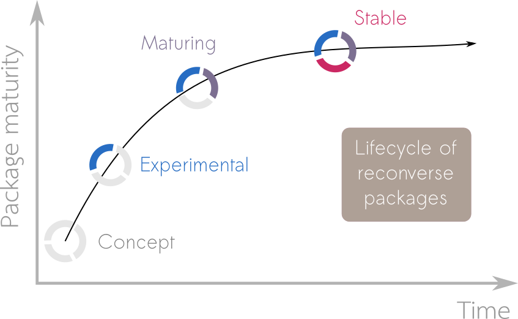

Packages
These are R packages developed as part of RECON or related to RECON.
Standard
Members of the R Epidemics Consortium have, for many years, been creating resources and software that could be used to inform the response to disease outbreaks, health emergencies and humanitarian crises. During this time, as well as providing training materials, running workshops and having members deployed to the field to help with data analytics, a variety of R packages have been created to enable analysts to quickly solve the problems they have.
aweek
Which day a week starts depends heavily on the either the local or professional context. This package is designed to be a lightweight solution to easily switching between week-based date definitions.

distcrete
Creates discretised versions of continuous distribution functions by mapping continuous values to an underlying discrete grid, based on a (uniform) frequency of discretisation, a valid discretisation point, and an integration range. For a review of discretisation methods, see Chakraborty (2015) doi:10.1186/s40488-015-0028-6.
earlyR
Implements a simple, likelihood-based estimation of the reproduction number (R0) using a branching process with a Poisson likelihood. This model requires knowledge of the serial interval distribution, and dates of symptom onsets. Infectiousness is determined by weighting R0 by the probability mass function of the serial interval on the corresponding day. It is a simplified version of the model introduced by Cori et al. (2013) doi:10.1093/aje/kwt133.

epicontacts
A collection of tools for representing epidemiological contact data, composed of case line lists and contacts between cases. Also contains procedures for data handling, interactive graphics, and statistics.
epiflows
Provides functions and classes designed to handle and visualise epidemiological flows between locations. Also contains a statistical method for predicting disease spread from flow data initially described in Dorigatti et al. (2017) doi:10.2807/1560-7917.ES.2017.22.28.30572.

epitrix
A collection of small functions useful for epidemics analysis and infectious disease modelling. This includes computation of basic reproduction numbers from growth rates, generation of hashed labels to anonymize data, and fitting discretized Gamma distributions.

incidence
Provides functions and classes to compute, handle and visualise incidence from dated events for a defined time interval. Dates can be provided in various standard formats. The class ‘incidence’ is used to store computed incidence and can be easily manipulated, subsetted, and plotted. In addition, log-linear models can be fitted to ‘incidence’ objects using ‘fit’.
matchmaker
Provides flexible dictionary-based cleaning that allows users to specify implicit and explicit missing data, regular expressions for both data and columns, and global matches, while respecting ordering of factors.
projections
Provides functions and graphics for projecting daily incidence based on past incidence, and estimates of the serial interval and reproduction number. Projections are based on a branching process using a Poisson-distributed number of new cases per day, similar to the model used for estimating R in ‘EpiEstim’ or in ‘earlyR’, and described by Nouvellet et al. (2017) doi:10.1016/j.epidem.2017.02.012. The package provides the S3 class ‘projections’ which extends ‘matrix’, with accessors and additional helpers for handling, subsetting, merging, or adding these objects, as well as dedicated printing and plotting methods.
Reconverse
Since the early days of RECON, the landscape of packages for the analysis of epidemics has grown, evolved and diversified, benefiting from feedback and contributions from our members as well as other groups. While such organic growth was needed and resulted in overall improvements of available tools, it has also led to a less consistent software landscape, with several packages overlapping or duplicating efforts, limited interoperability, and varying coding and development standards. Being aware that fragmented software landscapes can be the bane of data scientists (e.g. Excoffier and Heckel 2006, we realise there is also benefit to having a coherent and composable set of packages for users. The reconverse aims to address this. Much like the tidyverse is “an opinionated collection of R packages designed for data science”, the reconverse aims to be an opinionated ecosystem of packages for Outbreak Analytics.
The reconverse aims to provide a coherent and composable suite of analytics tools for informing the response to disease outbreaks, health emergencies and humanitarian crises.
We work hard to ensure packages within the reconverse fulfill three key goals:
- Efficiency: Packages can be used in real time to improve situation awareness and inform intervention strategies.
- Reliability: Packages are thoroughly and constantly tested using professional software development methods.
- Accessibility: Packages are free, open-source, and available on virtually any platform; and can be used with different levels of expertise.
grates
Provides a coherent interface and implementation for creating grouped date classes.
i2extras
Provides functions to work with ‘incidence2’ objects, including a simplified interface for trend fitting and peak estimation.
incidence2
Provides functions and classes to compute, handle and visualise incidence from dated events for a defined time interval. Dates can be provided in various standard formats. The class ‘incidence2’ is used to store computed incidence and can be easily manipulated, subsetted, and plotted.

outbreaks
Empirical or simulated disease outbreak data, provided either as RData or as text files.
reportfactory
Provides an infrastructure for handling multiple R Markdown reports, including automated curation and time-stamping of outputs, parameterisation and provision of helper functions to manage dependencies.
trendeval
Provides a coherent interface for evaluating models fit with the trending package.
trending
Provides a coherent interface to multiple modelling tools for fitting trends along with a standardised approach for generating confidence and prediction intervals.
Lifecycle
When a user considers utilising a package in their work it is helpful to provide them with information on the development plans around the package. This allows them to make an informed decision as to whether they want to take that package as a dependency. To help users understand the development status of a package we use lifecycle badges to relay one of 4 stages of package maturity; concept, experimental, maturing and stable:

Concept
Initial ideas of what the package will be, maybe some gist of code and discussions among developers, but not much more.
Experimental 
Draft of a functional package, but interfaces and functionalities may change over time, testing and documentation may be lacking. Typically semantic version < 0.1.0.
Maturing
Package is functional, documented and tested. Can be used in production with the understanding that the interface may still undergo minor changes. Typically semantic version < 1.0.0.
Stable
Package is functional, documented and tested. The interface is not meant to change in the future. Can be used in production and relied upon by other packages. Typically semantic version >= 1.0.0.